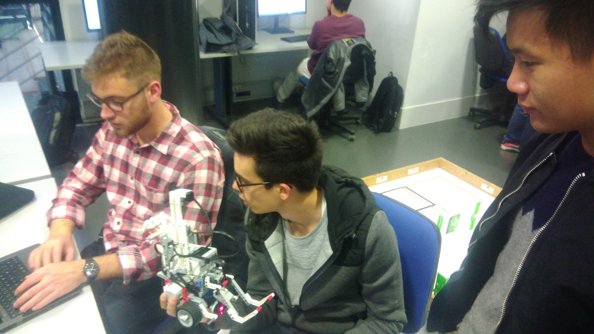

Optimus Team!

This part will present short descriptions of each member of our team. As we were working as a team and made all decisions together there still were some parts done by people. The desing which we made at the beginning we decided to change together after hours of discussions and tests. We just wanted to mention that during the implementation the code we were never alone. When one person had any troubles others helped to solve the issues.
Team Leader - Hugo
I have worked on integrating all the functions of the robot together. I particularly built threads for some functions that have to work in parallel.
I also worked on implementing the mapping algorithms (for both arenas). For the first one, as we know its shape, the idea is to move and scan for obstacles, and go to them once the robot sees some. For the big arena, we don’t know its shape, so the robot has to draw it first, by following the fences. After that, it can do the same scanning algorithm than for the small arena.
Virgile
I worked on the bluetooth communication with the server. I made sure the robot sends the right information. I also implemented the drawing of the map the robot discovers during the run. Each time the robot encounters an object at a (x,y) position,it writes the (R,G,B) of the pixel according to the nature of the object (movable, non movable) and when the map is complete it sends it to the server one pixel at a time At the end of the project, I did some cleaning in the code and divided our big main.c code into several c files to make it easier to read and to modify if need be. As a beginner in c coding, it was interesting for me to discover the logic of embedded systems and to learn how to deal with the small memory of the robot and the thread programming.
Liang

My job in this project is mainly on the robot moving function and the utilization of the compass sensor.
Since our robot make the decision of the next movement base on which direction it is heading (where it is) and in which direction it want to go (where it want to go), we want to use the compass sensor to make the movement of robot as accurate as we can.
And at first, we decided to use both the compass sensor and the gyroscope sensor for moving, but then I find a way to only use compass sensor for both recognizing the heading direction and rotating accurately. For example now our robot can rotate to heading to any certain direction or turn right or left any certain degree with the accuracy less than +-1 degree.
My jobs work as the function called by the mapping and coordinate calculating part, and I also do some jobs in helping implement the capture and releasing object function.
Pawel
My main task was to work on detecting algorithms. We agreed to use ultrasonic sensor and light/color sensor and put them in the middle of front part of the robot. I have implemented functions to detect obstacles in the front, to get information what kind of obstacle it is and the scanning functions. After that we had a short meeting about obstacles and decided to move the movable obstacle in front of us and place the nonmovable at the back part so I also implemented with help of my team.
I agreed to be the responsible one for the website, what is the pleasure with team like that.